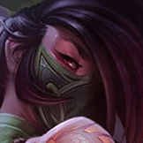

核心裝備
 無限寶珠
無限寶珠對低血目標的額外斬殺與阿卡莉收割節奏非常契合。
 雷霆風暴
雷霆風暴短時間爆發後追加傷害與移速，方便進出戰場。
 死亡之帽
死亡之帽把中期以後整套 AP 爆發拉高。
 虛空之杖
虛空之杖敵人開始堆魔抗後維持對前後排的威脅。
 中婭沙漏
中婭沙漏切入後拖掉敵方集火，等待煙霧、位移或隊友跟上。

Akali · 高機動切後／殘血收割型刺客
不要看到脆皮就第一個衝。先讓前排交戰，1 技與被動消耗到可斬殺血線，再用大絕或 3 技切入；煙霧彈要用來拖技能與等能量，而不是進場前先空掉。
本站評級理由：阿卡莉在 ARAM 有極高的側切與收割上限，煙霧彈能拖掉大量鎖定傷害，大絕與 3 技可以跨過前排直達後排。7.0a 標準 ARAM 已把她的傷害輸出從 120% 下修到 110%，仍保留一定補償，但需要很精準的進場時機。
Riot 7.0a：標準 ARAM 阿卡莉傷害輸出 120%→110%。未找到後續標準 ARAM 承傷調整，維持 100%。
對低血目標的額外斬殺與阿卡莉收割節奏非常契合。
短時間爆發後追加傷害與移速，方便進出戰場。
把中期以後整套 AP 爆發拉高。
敵人開始堆魔抗後維持對前後排的威脅。
切入後拖掉敵方集火，等待煙霧、位移或隊友跟上。

法穿直接提高爆發。

三級鞋補爆發與收割能力。

短連段容易觸發，強化第一輪斬殺。

頻繁位移與煙霧進出能穩定觸發。

連續技能或普攻命中後補上額外適性傷害，適合完整打一套的英雄。

ARAM 擊殺助攻密集，快速累積法強。

切入吃到第一輪爆發時多一層容錯。

補真正的自由位移，追擊或撤退都重要。

切後被反集火時提高存活率。
1 技 > 3 技 > 2 技
ARAM 開局三個基礎技能各點 1 級，之後主升 1 技、次升 3 技；大絕能點就點。
只用 1 技與被動做可退的短換血，不要在五人視野正面硬吃控制。
兩件爆發裝後才開始真正威脅後排。先等關鍵控制交掉，再用大絕第一段或 3 技標記進場。
目標是脆皮與殘血，不是坦克。煙霧彈內拖時間等能量與下一輪技能，中婭可用來承接切入後的真空期。
 峽谷製造者
峽谷製造者可替換雷霆風暴，增加持續作戰與全能吸血。
 女妖面紗
女妖面紗用法術盾保證第一次進場。
 水仙三叉戟
水仙三叉戟需要破盾功能時替換一件爆發裝。
看遊戲卡片下方分類 → 點相同分類 → 看左側 S+／S／A。
一、三技能與大絕構成主要連段，技能傷害與冷卻收益能直接提高刺殺效率。
三技能與大絕提供多段位移，身法增幅可以高頻反覆觸發。
衝刺、潛隱與進退場全部符合迷霧系列，是阿卡莉最自然的強化方向。
大絕無敵、技能暴擊與技能普攻循環都能提高一套連段上限。
多段技能連招能快速觸發雷霆系列，補足範圍與收割傷害。
離開煙霧或位移後的額外跑速能幫助追擊與安全撤退。
v80.10.0 ARAM A 第一批：阿卡莉套用 7.0a 標準 ARAM 110% 傷害輸出，玩法以延後進場與收割為主。
ARAM 使用獨立於召喚峽谷的資料集；本站會把官方模式平衡、單線 5v5 特性與出裝／符文適配分開判斷，而不是直接複製峽谷配置。